CAMPUS · שבוע 1 · סדנת מיומנותשטיפה, לבישה ושדה סטרילי
הכניסה הראשונה לחדר הניתוח, צעד אחרי צעד
מצגת לדוגמה של Surgery X Academy · תוכן כללי שנכתב להדגמה · המרכז הרפואי אופק (בדוי)
 למה זה חשוב
למה זה חשובהשדה שייך לכולם
- זיהום באתר הניתוח הוא סיבוך שאפשר למנוע ברובו
- כל מי שבחדר אחראי לשמור על השדה, גם הסטודנט/ית
- אם יש ספק, אין ספק: מחליפים כפפה או חלוק
 לפני שנכנסים
לפני שנכנסיםמוכנים לחדר
- תכשיטים ושעונים נשארים בחוץ
- ציפורניים קצרות, בלי לק
- כובע שמכסה את כל השיער ומסכה על האף והפה
- מציגים את עצמכם לאחות ולמנתח/ת: שם, שנה ומה מותר לכם לעשות

שטיפת ידיים כירורגיתמהאצבעות אל המרפקים
- שטיפה מקדימה במים וסבון
- ניקוי מתחת לציפורניים
- חיטוי לפי הנוהל של היחידה, מכפות הידיים ועד המרפקים
- הידיים תמיד מעל המרפקים, כדי שהמים יזרמו הרחק מהן
- ייבוש במגבת סטרילית, מקצות האצבעות אל המרפק
התכשירים והזמנים לפי הנוהל של המרכז הרפואי
 חלוק וכפפות
חלוק וכפפותלובשים בלי לגעת
- פותחים את החלוק מהצווארון כלפי מטה, בלי לגעת בבגדים
- הצוות המסתובב עוזר לקשור מאחור
- כפפות בטכניקה סגורה: הידיים נשארות בתוך השרוולים
- אחרי הלבישה: הידיים מול הגוף, בין המותניים לכתפיים

השדה הסטרילימה סטרילי ומה לא
סטרילי
- חזית החלוק, מהחזה עד המותניים
- השרוולים
- השולחן, מעל גובה השולחן
לא סטרילי
- הגב
- מתחת למותניים ומעל הכתפיים
- כל מה שנפל מהשולחן
עוברים גב אל גב או פנים אל פנים ואף פעם לא בגב אל השדה

כשמשהו משתבשאומרים מיד, בקול
- נגעתם במשהו שאינו סטרילי? אומרים, גם אם אף אחד לא ראה
- מחליפים כפפה או חלוק וחוזרים לשדה
- אף אחד לא כועס על מי שאמר. כועסים על מי ששתק
 התפקיד שלכם
התפקיד שלכםסטודנט/ית בחדר הניתוח
- עומדים איפה שאומרים לכם
- שואלים לפני שנוגעים
- מחזיקים מפשק בשקט ובסבלנות
- בסוף: עוזרים להעביר את המטופל/ת ורושמים בפנקס באפליקציה
סיכוםשלושה דברים לזכור
- מכינים את עצמכם לפני שנכנסים
- יודעים מה סטרילי ושומרים עליו
- טעות אומרים מיד
Surgery X Academy · מצגת לדוגמה